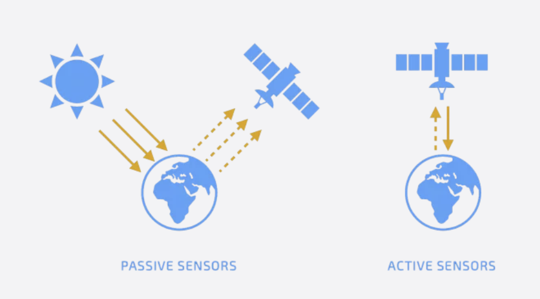
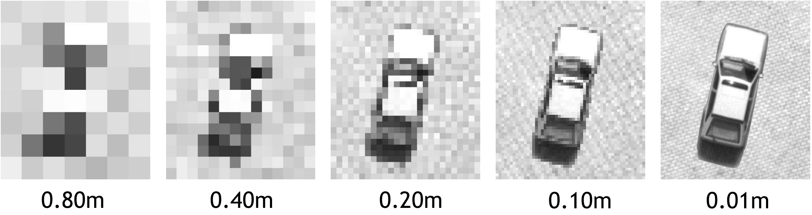
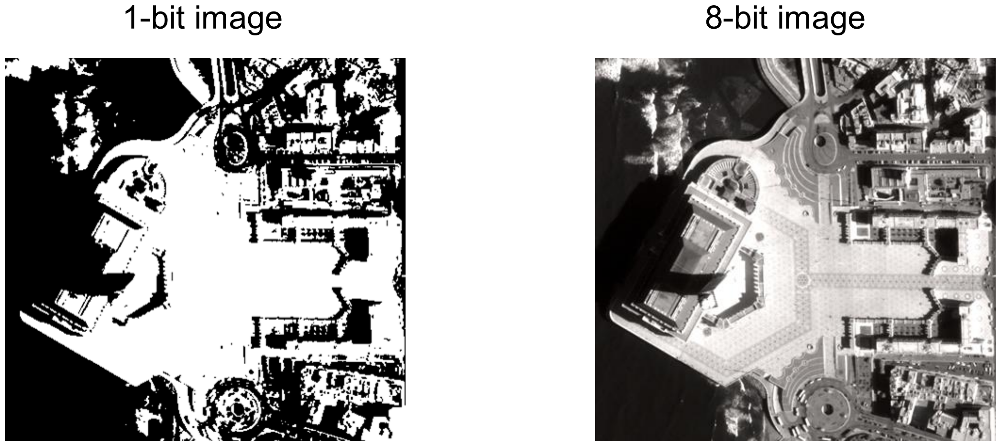

1 Week 1 - Intro to Remote Sensing
1.1 Overview
Week1, let’s start with a ‘simple’ question: What is remote sensing?
NASA defined Remote sensing as an acquisition of information from a distance. In my understanding, this tech involves acquiring data about entities or regions without direct physical interaction. Typically, it is achieved by detecting and documenting energy that is either reflected or emitted, followed by the processing, analysis, and utilization of this data.
Its implementation is through sensors mounted on various platforms: like Satellites, Airplanes (for aerial imagery), Drones and Smartphones. There are over 150 satellites in orbit equipped with sensors for remote sensing.
Oh,I see,easy one. What types of sensors are there?
There are mainly two types of sensors:
Active sensors are equipped with their own illumination source, actively emitting electromagnetic waves and then measuring the backscatter that returns to the sensor. Examples like: Radar and LiDAR. Their application includes generating precise digital elevation models through the Shuttle Radar Topography Mission (SRTM), monitoring rainforest depletion via LiDAR technology, and supporting security measures with its effectiveness in marine and Arctic surveillance.
Conversely, passive sensors don’t emit anything. They rely on natural light, detecting reflected energy (in electromagnetic waves) from the sun. Examples like: Landsat series and IRS-series. The Landsat series, active for over four decades, stands as the most enduring Earth observation initiative in passive remote sensing. It provides critical insights into Earth’s climate, ecosystems, and land use changes, serving as a historical marker for environmental transformation.
 Emm, can you provide me with an example respectively makes it easy to understand?
Sure. Active sensors- your iPhone camera with the flash turned on. Passive sensor- your iPhone camera without the flash turned on OR- your eyes.
Gotcha! Next, we move to ‘Electromagnetic waves’. This reminds me of the old days when I was studying A-level physics. Time flies by, it makes me cry :( .
As we know most remote sensing relies on detecting and analyzing electromagnetic radiation(EMR) to gather information about objects or areas from afar without direct contact. (We are not focused on some types of remote sensing that use mechanical waves instead of electromagnetic waves like seismographs). Electromagnetic Radiation 1) consists of waves with both electric and magnetic fields that propagate through space, and 2) the electric and magnetic fields are perpendicular to each other.
The fundamental Formula related to EMR is:  Electromagnetic radiation (EMR) undergoes several variations before reaching a sensor, rather than being directly reflected. For example: Surface- Energy is absorbed by the surface, and Atmospheric- Energy is scattered by particles in the atmosphere, influencing the clarity and quality of the sensed data.
Electromagnetic radiation (EMR) undergoes several variations before reaching a sensor, rather than being directly reflected. For example: Surface- Energy is absorbed by the surface, and Atmospheric- Energy is scattered by particles in the atmosphere, influencing the clarity and quality of the sensed data.
There are Three types of scattering - Rayleigh scattering occurs with particles much smaller than the wavelength of the radiation (like oxygen molecules). This phenomenon explains why the sky appears “blue” during the day and why the sea normally appears “blue”. - Mie scattering happens with particles about the same size as the wavelength (like smoke and dust). - Non-selective scattering involves particles much larger than the wavelength(like water vapour).
BTW, 1) the moon has a black sky because there is no atmosphere- no scattering can happen. 2) The ocean usually appears blue because it absorbs blue wavelengths the least, scattering and reflecting them to the observer’s eye. 3) Active sensors like Synthetic Aperture Radar (SAR) can pass through clouds.
Can you explain about Remotely sensed data and the four resolutions?
Of course, I will explain to you in detail:
Raster data is typically obtained through remote sensing; however, this varies depending on the sensor.
4 types of resolution
1)Spatial resolution: defines the ability to resolve spatially close objects and to identify small objects, which is expressed by Ground Sampling Distance (pixel size on the ground). The GSD is influenced by factors such as the altitude of the sensor, the sensor’s optical characteristics, and the pixel size of the sensor array. More detailed images are possible with higher spatial resolution (smaller pixel sizes), which highlights smaller features in the observed region.

Spatial resolution (geometric) o Low resolution >= 30m < 300m o Medium resolution >= 5 < 30m o High resolution >= 2m < 5m o Very high resolution < 2m
- Spectral: Describes the number and width of spectral bands that a sensor records. (more or narrower bands = better spectral resolution)
For example:

The Landsat 8 OLI sensor shows improved spectral resolution, indicated by the increased number of bands and narrower bandwidths (compared to Landsat 4-5 (MSS)). This improvement allows for more precise detection of different features on the Earth’s surface due to the ability to capture more specific ranges of the spectrum and differentiate between more subtle differences in reflectance.
o Panchromatic (wide bandwidth, visible range of spectrum) o Multispectral >= 3 spectral bands (RGB, RGB NIR + MIR) o Hyperspectral >= 30 spectral bands (lower geometric and resolution) o These images have high spectral resolution but low spatial resolution
- Radiometric: defines the ability to resolve objects with similar reflectance (within the same wavelength)
(Higher number of bits = higher the radiometric resolution = higher the quality of the image = higher possibility to differentiate features)
For example:
8 bit = 256 possible values; 1 bit = 2 possible values 
Images above clearly illustrute that the 8-bit image has better quality than the 1-bit one.
4)Temporal: Involves how frequently a sensor collects data of the same area. (Short revisit/reacquisition cycle = better temporal resolution)
For example: The satellite orbit above the UK and it won’t come back until the day after 15 days. So if the cycle is shorten to 3 days it’s better temporal resolution.
So much knowledge! Thank you for your summary and explanation, but I need some time to understand.
take your time! Next, I will review the application of remote sensing according to some literature, which will help you understand.
1.2 Applications
“In science there is only physics; all the rest is stamp collecting.”
The fundamental core of remote sensing technology is electromagnetism, the interactions of electromagnetic energy with the atmosphere and the Earth’s surface are critical in determining the quality and type of data collected. The electromagnetic spectrum highlights the diverse range of electromagnetic waves, from long radio waves to short gamma rays, and the human eye’s ability to detect only a small portion of this spectrum, known as visible light.
Presented below are several prevalent electromagnetic waves utilized in the field of remote sensing, along with their respective applications and examples of corresponding remote sensing satellites.
Visible Light and Near-Infrared: These bands are commonly used for monitoring land cover, vegetation health, urban planning, and environmental changes. Vegetation is strongly reflected in these bands, making it possible to assess the health and density of vegetation. Satellite Examples: Landsat Series: For global environmental monitoring, including agriculture, and forest coverage. Sentinel-2: Providing high-resolution images of land cover and vegetation health.
Thermal Infrared: Used for measuring surface temperature, fire detection, evapotranspiration, and sea surface temperature monitoring. Thermal infrared data can help analyze drought conditions and the urban heat island effect. Satellite Examples: MODIS: Onboard the Terra and Aqua satellites, providing global climate system observations, including surface temperature.
Microwave: As microwaves can penetrate clouds, dust, smoke, snow, and rain, they are ideal for satellite communication in extreme weather conditions. Microwave remote sensing is crucial for understanding global water cycles and climate change. Satellite Examples: SMAP (Soil Moisture Active Passive): A NASA satellite focused on global soil moisture measurement to help forecast floods and droughts. GRACE (Gravity Recovery and Climate Experiment) Series: To measure variations in Earth’s gravitational field and deduce changes in ice mass and groundwater storage.
Ultraviolet: Mainly used for atmospheric and solar studies, including ozone layer monitoring, solar activity observation, and air quality assessment. Satellite Examples: Aura Satellite: Carrying the OMI (Ozone Monitoring Instrument) focused on atmospheric composition and atmospheric chemistry studies.
X-Rays and Gamma Rays: Mainly employed in the field of astronomy to investigate high-energy events in the universe, such as black holes, neutron stars, and remnants of supernovas. Satellite Examples: Chandra X-ray Observatory: For studying high-temperature objects and X-ray sources in the universe.
As we can see above, with the cornerstone of electromagnetic technology, remote sensing can be utilized across interdisciplinary fields, especially contributing significant power to urban-related studies. For urban environments, the differentiation between wavelengths allows for the identification of specific gases in the atmosphere, which can be used to monitor air quality or track the movement of atmospheric pollutants. In terms of Urban Agriculture, it enables the identification of healthy versus stressed vegetation, allowing for precise monitoring of crop health and the optimization of agricultural practices. Within the field of Urban Planning, it provides critical data for urban planning, such as land use classification and urban expansion. As for Urban Climate Studies, remote sensing data contribute to understanding and modelling climate systems and tracking changes in ice cover, sea levels, and global temperatures.
1.3 Reflection
Based on my interest in the Internet of Things (IoT), I have developed some ideas about the relationship between remote sensing and IoT. In my view, the development of the two disciplines, remote sensing and IoT, is blurring the distance between them. Both technologies are driven by similar needs- to efficiently collect data on a large scale without requiring a lot of manpower. They have both evolved to be able to analyse data and simplify large amounts of data to make it easy to understand.
Based on what I’ve learnt about remote sensing this week, I believe that remote sensing and the Internet of Things are essentially complementary and that they have different strengths for solving problems. Remote sensing can essentially be thought of as “external IoT”, whereas traditional IoT uses embedded or internal sensors. Combining the two offers even greater potential. For example, sensors inside an underground pipe may detect a drop in pressure at a certain cross-section, but external hyperspectral sensors can link this pressure to changes present in the ground and synthesise the root cause of the problem. The data generated by these technologies has the potential to provide a wide range of new insights, reduce costs and improve system performance.
With their combination, plus the utilisation of new technologies such as artificial intelligence and cloud computing. There is an opportunity for a whole host of new ways to protect critical infrastructure, preserve the environment and improve human life.
1.4 References
Milne, Anthony Kinnaird. 1986. “The Use of Remote Sensing in Mapping and Monitoring Vegetational Change Associated with Bushfire Events in Eastern Australia.” Geocarto International 1 (1): 25–32.
Navalgund, R.R., Jayaraman, V. and Roy, P.S., 2007. Remote sensing applications: An overview. Current Science, 93(12), pp.1747-1766. Available at: http://www.jstor.org/stable/24102069.
Van Westen, CJ. 2000. “Remote Sensing for Natural Disaster Management.” International Archives of Photogrammetry and Remote Sensing 33 (B7/4; PART 7): 1609–17.